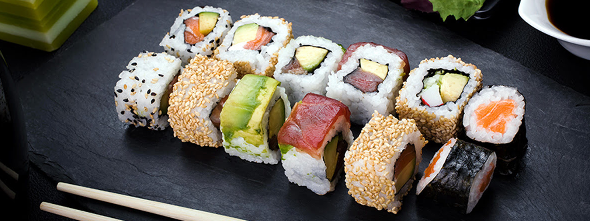
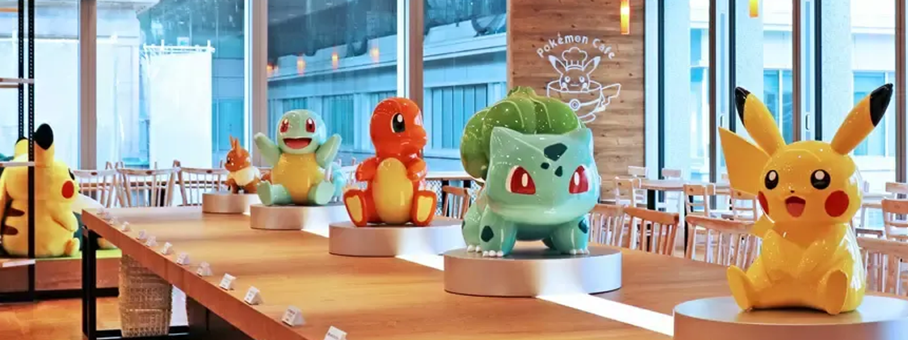

Dónde Comer
En este buscador, vas a poder filtrar por nombre y tipo de establecimiento los mejores restaurantes que se ajusten a tus preferencias.
ver más
En este buscador, vas a poder filtrar por nombre y tipo de establecimiento los mejores restaurantes que se ajusten a tus preferencias.
ver más
En Tokyo vas a encontrar los mejores Sushis de la mas alta calidad
ver más
Conocé algunos de los mejores restaurantes de Tokyo, los cuales vienen con tematicás divertidas e intresantes
ver más